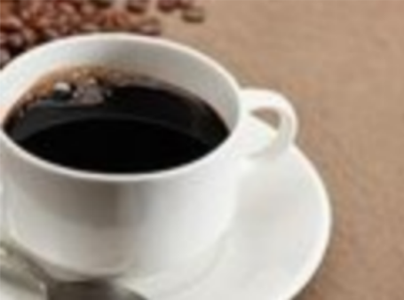
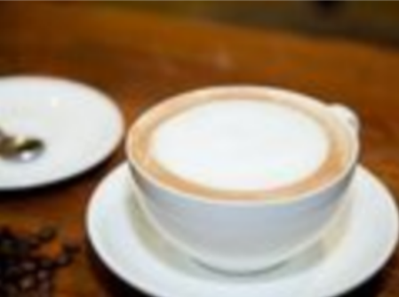
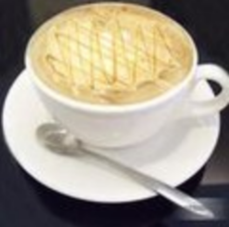

来杯咖啡吗？
来杯咖啡吗？
来杯咖啡吗？
来杯咖啡吗？
拿铁
 “拿铁”是意大利文“Latte"的音译，拿铁咖啡拿铁咖啡(6张)
拿铁咖啡(CoffeeLatte)是花式咖啡的一种， 是咖啡与牛奶交融
的极至之作。
“拿铁”是意大利文“Latte"的音译，拿铁咖啡拿铁咖啡(6张)
拿铁咖啡(CoffeeLatte)是花式咖啡的一种， 是咖啡与牛奶交融
的极至之作。
美式咖啡
 “美式咖啡”(英文: Americano, 意大利语: Caffe Americano)咖啡的- -种，是最普通的咖啡。是使用滴滤式咖啡壶所制作出的黑咖啡，又或者 是意式浓缩中加入大量的水制成。卡布奇诺
 20世纪初期，意大利人阿奇布夏发明蒸汽压力咖啡机的同时，也发展出了卡布奇诺咖啡。卡布奇诺是-种加入以同量的意大利特浓咖啡和蒸汽泡沫 牛奶相混合的意大利咖啡。焦糖玛奇朵
 焦糖玛奇朵(英文: Caramel Macchiato)是在香浓热牛奶上加入浓缩咖啡、香草，再淋上纯正焦糖而制成的饮品，融合三种不同口味。 Macchiato意大利文，意思是‘ “烙印”和“印染”，中文音译‘‘玛奇朵”。"Caramel" 意思是焦糖。回到顶部 | 版权所有 © 郭嘉阳